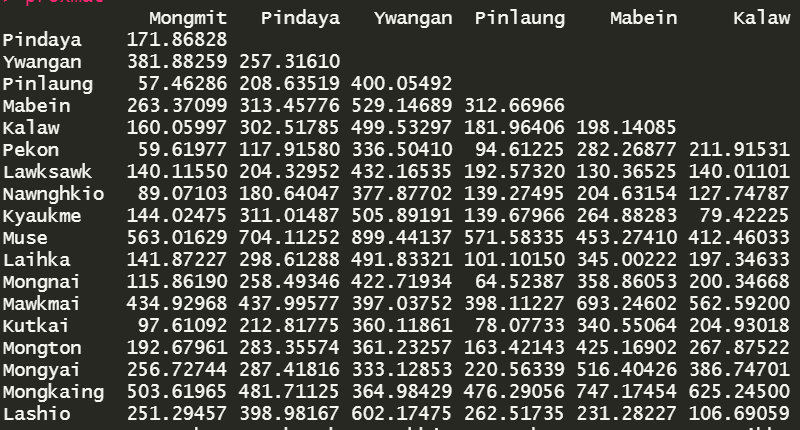
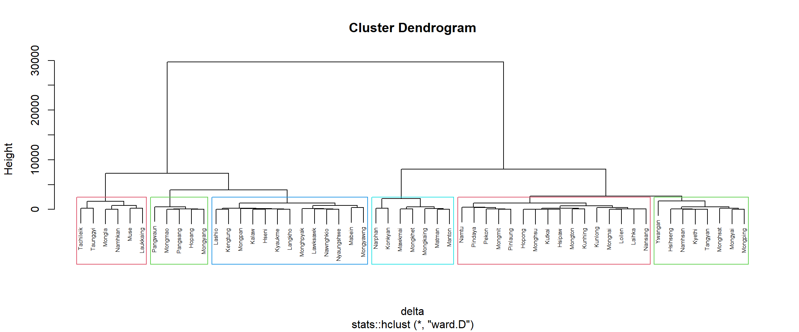
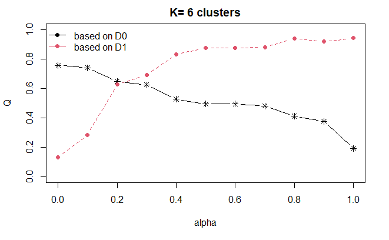
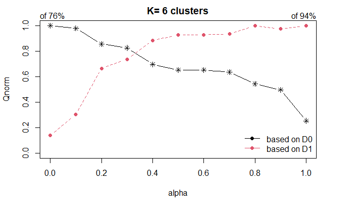
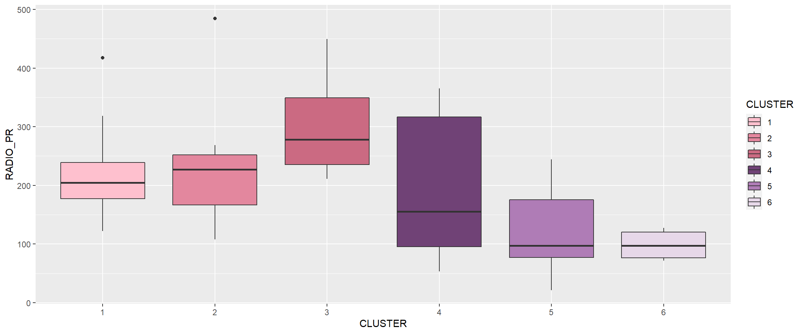
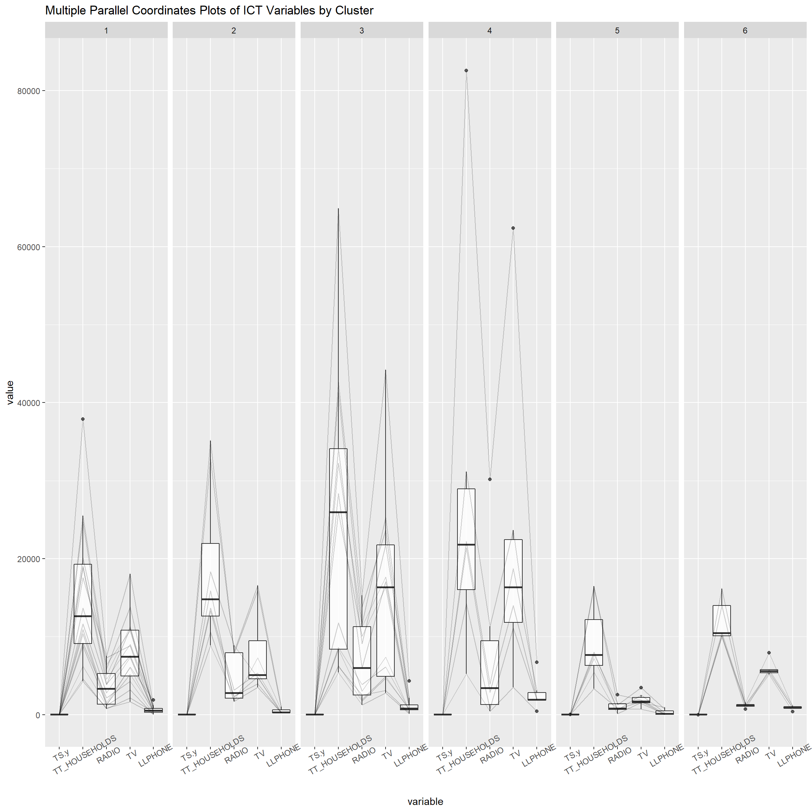

Press to toggle code
pacman::p_load(rgdal, spdep, tmap, sf, ggpubr, cluster, factoextra, NbClust, heatmaply, corrplot, psych, tidyverse, ClustGeo, GGally)This is an in-class exercise is a continuation of Hands-on Exercise 3, based on the last two sections of Chapter 5 of R for Geospatial Data Science and Analytics by Dr. Kam Tin Seong and is a requirement under the class ISS624: Geospatial Analytics and Applications.
The analytical objective of the exercise was to delineate Shan State, Myanmar into homogeneous regions by using multiple Information and Communication technology (ICT) measures, namely: Radio, Television, Landline phone, Mobile phone, Computer, and Internet at home.
The first clustering result visually showed very fragmented groupings. And so, we started to look into spatially constrained clustering algorithms. Specifically, we tackled the SKATER ("Spatial Kluster Analysis by Tree Edge Removal") method which constructs the minimum spanning tree from the adjacency matrix and cuts the tree to achieve maximum internal homogeneity. In this in-class exercise, we explore another method: hierarchical clustering with spatial constraints.
The code chunk below installs and loads the packages from Hands-on Exercise 3,but with the addition of ClustGeo ,using p_load():
NEW LIBRARY UNLOCKED: ClustGeo
This is the focus for this exercise as this package provides the method to be used in spatial clustering. The special function in particular is hclustgeo() uses a Ward-like hierarchical clustering algorithm while taking into account geographical constraints.
NEW LIBRARY UNLOCKED: GGally
This is an extension of ggplot2 that adds several functions to reduce the complexity of combining geoms with transformed data.
For our data, we’ll be using the RDS file saved from the previous exercise which contains the simple features dataframe that has all the geospatial data and clustering variables. The code chunk below imports the RDS file using st_read().
The code chunk below extracts our clustering variables into a dataframe ‘shan_ict’.
RADIO_PR TV_PR LLPHONE_PR MPHONE_PR COMPUTER_PR
Mongmit 286.1852 554.1313 35.30618 260.6944 12.15939
Pindaya 417.4647 505.1300 19.83584 162.3917 12.88190
Ywangan 484.5215 260.5734 11.93591 120.2856 4.41465
Pinlaung 231.6499 541.7189 28.54454 249.4903 13.76255
Mabein 449.4903 708.6423 72.75255 392.6089 16.45042The code chunk below uses dist() to create a proximity matrix using the 'euclidean' method.

The following is an excerpt from Chapter 5 of R for Geospatial Data Science and Analytics which explains the algorithm:
In the nutshell, the algorithm uses two dissimilarity matrices \(D_0\) and \(D_1\) along with a mixing parameter alpha, whereby the value of alpha must be a real number between [0, 1]. \(D_0\) can be non-Euclidean and the weights of the observations can be non-uniform. It gives the dissimilarities in the attribute/clustering variable space. \(D_1\), on the other hand, gives the dissimilarities in the constraint space. The criterion minimized at each stage is a convex combination of the homogeneity criterion calculated with \(D_0\) and the homogeneity criterion calculated with \(D_1\).
The idea is then to determine a value of alpha which increases the spatial contiguity without deteriorating too much the quality of the solution based on the variables of interest. This need is supported by a function called
choicealpha().
The ClustGeo package provides function called hclustgeo() to perform a typical Ward-like hierarchical clustering just like hclust() we learned in Hands-on Exercise 3.
To perform non-spatially constrained hierarchical clustering, we only need to provide the function a dissimilarity matrix ‘proxmat’ as shown in the code chunk below.

Before we can performed spatially constrained hierarchical clustering, a spatial distance matrix will be derived by using st_distance().
Notice that as.dist() is used to convert the data frame into a matrix.
Next, choicealpha() will be used to determine a suitable value for the mixing parameter alpha as shown in the code chunk below.


The graphs show that the intersection happens around alpha = 0.3. Because of that, we will set the argument 'alpha' to 0.3 and run the same function hclustgeo().
The code chunk below is used to reveal the distribution of a clustering variable (i.e RADIO_PR) by cluster.

Based on the graph above, it seems that Cluster 3 have the highest ‘RADIO_PR’ and Cluster 5 and 6 are on the lower end of ‘RADIO_PR’.
Past studies shown that parallel coordinate plot can be used to reveal clustering variables by cluster very effectively. The code chunk below uses ggparcoord() to create said plot for the ICT variables.

With this method of visualization, we can see all the variable patterns for the different clusters. Cluster 4 townships tend to own the highest number of TV and mobile-phone. On the other hand, households in Cluster 5 tends to own the lowest of all the five ICT.
In the code chunk below, group_by() and summarise() are used to derive mean values of the clustering variables.
# A tibble: 6 × 6
CLUSTER mean_RADIO_PR mean_TV_PR mean_LLPHONE_PR mean_MPHONE_PR mean_COMPUTE…¹
<chr> <dbl> <dbl> <dbl> <dbl> <dbl>
1 1 221. 521. 44.2 246. 20.5
2 2 237. 402. 23.9 134. 11.5
3 3 300. 611. 52.2 392. 29.0
4 4 196. 744. 99.0 651. 65.5
5 5 124. 224. 38.0 132. 6.68
6 6 98.6 499. 74.5 468. 21.0
# … with abbreviated variable name ¹mean_COMPUTER_PR---
title: "In-class Exercise 3: Spatially Constrained Clustering with ClustGeo"
editor: visual
---
# Overview
This is an in-class exercise is a continuation of [Hands-on Exercise 3](https://acapgeolano.netlify.app/hands-on_ex/hands-on_ex3/hands-on_ex3 "Hands-on Exercise 3"), based on the last two sections of [Chapter 5](https://r4gdsa.netlify.app/chap05.html "R4GDSA: Geographical Segmentation with Spatially Constrained Clustering Techniques") of [R for Geospatial Data Science and Analytics](https://r4gdsa.netlify.app/) by Dr. Kam Tin Seong and is a requirement under the class ISS624: Geospatial Analytics and Applications.
## Previously on Hands-on Exercise 3...
The analytical objective of the exercise was to delineate [Shan State](https://en.wikipedia.org/wiki/Shan_State), [Myanmar](https://en.wikipedia.org/wiki/Myanmar) into homogeneous regions by using multiple Information and Communication technology (ICT) measures, namely: Radio, Television, Landline phone, Mobile phone, Computer, and Internet at home.
The first clustering result visually showed very fragmented groupings. And so, we started to look into spatially constrained clustering algorithms. Specifically, we tackled the SKATER (\"**S**patial **K**luster **A**nalysis by **T**ree **E**dge **R**emoval\") method which constructs the minimum spanning tree from the adjacency matrix and cuts the tree to achieve maximum internal homogeneity. In this in-class exercise, we explore another method: hierarchical clustering with spatial constraints.
# Getting Started
## Loading the Packages
The code chunk below installs and loads the packages from Hands-on Exercise 3,but with the addition of **`ClustGeo`** ,using `p_load()`:
```{r}
pacman::p_load(rgdal, spdep, tmap, sf, ggpubr, cluster, factoextra, NbClust, heatmaply, corrplot, psych, tidyverse, ClustGeo, GGally)
```
::: {.callout-note icon="false"}
## 🎮 LEVEL UP!
**NEW LIBRARY UNLOCKED:** [**`ClustGeo`**](https://cran.r-project.org/web/packages/ClustGeo/ "ClustGeo package")
This is the focus for this exercise as this package provides the method to be used in spatial clustering. The special function in particular is `hclustgeo()` uses a Ward-like hierarchical clustering algorithm while taking into account geographical constraints.
**NEW LIBRARY UNLOCKED: [`GGally`](https://ggobi.github.io/ggally/)**
This is an extension of **`ggplot2`** that adds several functions to reduce the complexity of combining geoms with transformed data.
:::
## Importing the RDS File
For our data, we'll be using the RDS file saved from the previous exercise which contains the simple features dataframe that has all the geospatial data and clustering variables. The code chunk below imports the RDS file using `st_read()`.
```{r}
shan_sf <- read_rds('data/shan_sf.rds')
```
## Repeating Some Steps
### Extracting cluster variables
The code chunk below extracts our clustering variables into a dataframe *'shan_ict'*.
```{r}
cluster_vars <- shan_sf %>%
st_set_geometry(NULL) %>%
select("TS.x", "RADIO_PR", "TV_PR", "LLPHONE_PR", "MPHONE_PR", "COMPUTER_PR")
row.names(cluster_vars) <- cluster_vars$"TS.x"
shan_ict <- select(cluster_vars, c(2:6))
head(shan_ict, n=5)
```
## Getting the proximity matrix
The code chunk below uses `dist()` to create a proximity matrix using the \'**euclidean\' method**.
```{r}
proxmat <- dist(shan_ict, method = 'euclidean')
```

# Spatially Constrained Clustering: ClustGeo
The following is an excerpt from [Chapter 5 of R for Geospatial Data Science and Analytics](https://r4gdsa.netlify.app/chap05.html#a-short-note-about-clustgeo-package) which explains the algorithm:
> In the nutshell, the algorithm uses two dissimilarity matrices $D_0$ and $D_1$ along with a mixing parameter alpha, whereby the value of alpha must be a real number between \[0, 1\]. $D_0$ can be non-Euclidean and the weights of the observations can be non-uniform. It gives the dissimilarities in the **attribute/clustering variable space**. $D_1$, on the other hand, gives the dissimilarities in the constraint space. The criterion minimized at each stage is a convex combination of the homogeneity criterion calculated with $D_0$ and the homogeneity criterion calculated with $D_1$.
>
> The idea is then to determine a value of alpha which increases the spatial contiguity without deteriorating too much the quality of the solution based on the variables of interest. This need is supported by a function called `choicealpha()`.
## Ward-like Hierarchical Clustering: ClustGeo
The **`ClustGeo`** package provides function called `hclustgeo()` to perform a typical Ward-like hierarchical clustering just like `hclust()` we learned in Hands-on Exercise 3.
To perform non-spatially constrained hierarchical clustering, we only need to provide the function a dissimilarity matrix 'proxmat' as shown in the code chunk below.
```{r}
#| fig-width: 12
nongeo_cluster <- hclustgeo(proxmat)
plot(nongeo_cluster, cex = 0.5)
rect.hclust(nongeo_cluster,
k = 6,
border = 2:5)
```
### Mapping the clusters formed
```{r}
#| fig-width: 12
groups <- as.factor(cutree(nongeo_cluster, k=6))
shan_sf_ngeo_cluster <- cbind(shan_sf, as.matrix(groups)) %>%
rename(`CLUSTER` = `as.matrix.groups.`)
qtm(shan_sf_ngeo_cluster, "CLUSTER", fill.palette = "Pastel1")
```
## Spatially Constrained Hierarchical Clustering
Before we can performed spatially constrained hierarchical clustering, a spatial distance matrix will be derived by using [`st_distance()`](https://r-spatial.github.io/sf/reference/geos_measures.html).
```{r}
dist <- st_distance(shan_sf, shan_sf)
distmat <- as.dist(dist)
```
Notice that `as.dist()` is used to convert the data frame into a matrix.
Next, `choicealpha()` will be used to determine a suitable value for the mixing parameter alpha as shown in the code chunk below.
```{r}
#| output: false
cr <- choicealpha(proxmat,
distmat,
range.alpha = seq(0, 1, 0.1),
K=6,
graph = TRUE)
```
{fig-align="center"}
{fig-align="center"}
The graphs show that the intersection happens around alpha = 0.3. Because of that, we will set the argument `'alpha'` to 0.3 and run the same function `hclustgeo()`.
```{r}
#| fig-width: 12
clustG <- hclustgeo(proxmat, distmat, alpha = 0.3)
groups <- as.factor(cutree(clustG, k=6))
shan_sf_Gcluster <- cbind(shan_sf, as.matrix(groups)) %>%
rename(`CLUSTER` = `as.matrix.groups.`)
qtm(shan_sf_Gcluster, "CLUSTER", fill.palette = "Pastel1")
```
# Visualizing the Clusters
## Visualizing Individual Cluster Variables
The code chunk below is used to reveal the distribution of a clustering variable (i.e RADIO_PR) by cluster.
```{r}
#| fig-width: 12
ggplot(data = shan_sf_ngeo_cluster,
aes(x = CLUSTER, y = RADIO_PR, fill = CLUSTER)) +
scale_fill_manual(values = c("#fec0ce",
"#e3879e",
"#cb6a82",
"#704276",
"#af7cb6",
"#e7d8e9")) +
geom_boxplot()
```
::: {.callout-note icon="false"}
## 🌸 NEW OBSERVATION!
Based on the graph above, it seems that Cluster 3 have the highest 'RADIO_PR' and Cluster 5 and 6 are on the lower end of 'RADIO_PR'.
:::
## Multivariate Visualization
Past studies shown that parallel coordinate plot can be used to reveal clustering variables by cluster very effectively. The code chunk below uses `ggparcoord()` to create said plot for the ICT variables.
```{r}
#| fig-width: 12
#| fig-height: 12
ggparcoord(data = shan_sf_ngeo_cluster,
columns = c(17:21),
scale = "globalminmax",
alphaLines = 0.2,
boxplot = TRUE,
title = "Multiple Parallel Coordinates Plots of ICT Variables by Cluster") +
facet_grid(~ CLUSTER) +
theme(axis.text.x = element_text(angle = 30))
```
::: {.callout-note icon="false"}
## 🌸 NEW OBSERVATION!
With this method of visualization, we can see all the variable patterns for the different clusters. Cluster 4 townships tend to own the highest number of TV and mobile-phone. On the other hand, households in Cluster 5 tends to own the lowest of all the five ICT.
:::
In the code chunk below, `group_by()` and `summarise()` are used to derive mean values of the clustering variables.
```{r}
shan_sf_ngeo_cluster %>%
st_set_geometry(NULL) %>%
group_by(CLUSTER) %>%
summarise(mean_RADIO_PR = mean(RADIO_PR),
mean_TV_PR = mean(TV_PR),
mean_LLPHONE_PR = mean(LLPHONE_PR),
mean_MPHONE_PR = mean(MPHONE_PR),
mean_COMPUTER_PR = mean(COMPUTER_PR))
```